منصة بصمة التعليمية
تطبيق بصمة هو التطبيق المرافق للوحة بصمة للإدارة على الهاتف. كل ما تُعِدّه المدرسة في لوحة الإدارة — قوائم الطلاب والمعلمين، الجداول الدراسية، الاختبارات، السجلات السلوكية — يصبح شيئاً يمكن للمعلم أو المشرف التربوي أو ولي الأمر أو الطالب رؤيته والتفاعل معه من هاتفه. يكيّف التطبيق قائمته بالكامل حسب من سجّل الدخول: لا يرى ولي الأمر أبداً أدوات حضور المعلم، ولا يرى الطالب أبداً شاشات قوائم المشرف.
أدخل اسم المستخدم وكلمة المرور في شاشة تسجيل الدخول واختر تسجيل الدخول. يتذكر التطبيق الحسابات التي سجّلت الدخول إليها من قبل، ويعرضها كصف تبديل سريع أعلى نموذج تسجيل الدخول في المرة القادمة التي تفتحه فيها.
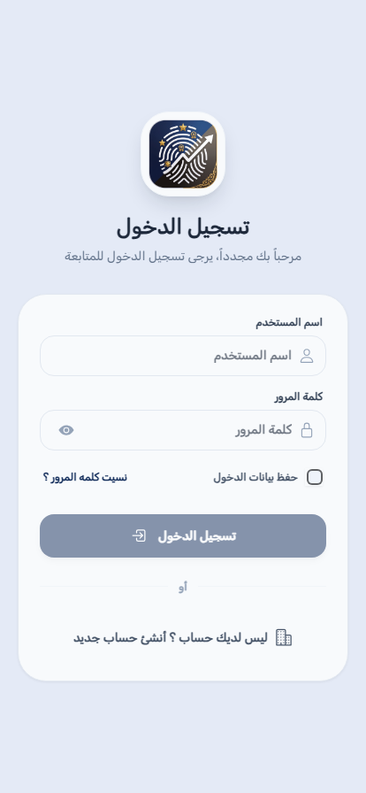
افتح القائمة الجانبية (الأيقونة في زاوية أي شاشة) واستخدم قائمة تحديد اللغة بالقرب من الأعلى. يتغير التطبيق بالكامل فوراً — بما في ذلك اتجاه التخطيط؛ تُعرض العربية من اليمين إلى اليسار، والإنجليزية من اليسار إلى اليمين.

بقية هذا الدليل منظّمة حسب الدور، لأن هذا هو تنظيم التطبيق نفسه — افتح الفصل المطابق لدورك (معلم، مشرف تربوي، مشرف مدرسة، ولي أمر، أو طالب) بدلاً من القراءة من البداية للنهاية.
الشاشة الرئيسية للمعلم تسرد كل فصل مُسنَد إليك. اختر فصلاً لفتح قائمة طلابه.

فتح فصل يعرض قائمة طلابه للحصة الحالية، مع زر تحديد حاضر أو غائب بجانب كل طالب. يتيح لك زرا الإجراء السريع تحديد الفصل كله حاضراً أو غائباً بضغطة واحدة قبل إجراء تعديلات فردية، ويعرض عداد أسفل الشاشة كم طالباً تم تسجيله حتى الآن. اختر حفظ بعد اكتمال تسجيل الحضور.
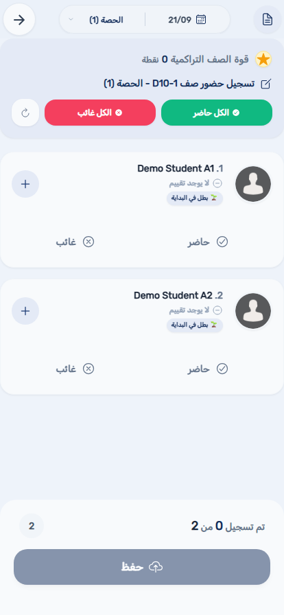
اختر اسم الطالب من القائمة (وليس صورته، والتي تفتح عرض صورة أكبر بدلاً من ذلك) لفتح ملفه الكامل — المستوى السلوكي واللقب وسجل الحضور.
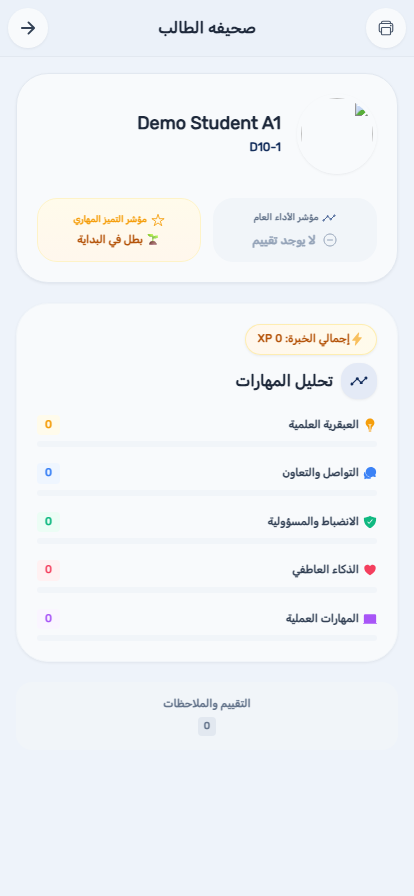
جدولك الأسبوعي الكامل عبر كل فصل تدرّسه، مجمّعاً حسب اليوم.

عندما تسجّل مدرستك غيابك، أو تطلب منك تغطية زميل آخر، تظهر الطلبات هنا بحاجة لردك.

قائمة للقراءة فقط بجلسات الاختبار المُسند إليك مراقبتها — التاريخ والمادة والفصل والحصة والقاعة. على عكس طلبات التغطية، لا تحتاج مهام المراقبة لقبول أو رفض؛ فهي تعيين ثابت.

إعلانات مدرستك، وموجز إشعاراتك الشخصي، وأي نشرات مُعمَّمة، لكل منها تبويب أو عنصر قائمة خاص به.


تصفّح مواد الفيديو والمستندات التي نشرتها مدرستك، منظَّمة حسب الفئة.

قائمة مستمرة بدرجات المتابعة الدورية التي أدخلتها لطلابك مقابل حقول المتابعة المخصصة لمدرستك (مثل إكمال الواجب أو المشاركة)، إضافة إلى عرض ملخص لكل فصل لمراجعة الدرجات عبر شعبة كاملة دفعة واحدة.


أدر ملفك الشخصي وتفضيلات الإشعارات وقائمة الأجهزة المسجَّل دخولها لحسابك من عنصري الإعدادات والأجهزة في القائمة الجانبية. تحتوي القائمة نفسها أيضاً على روابط سريعة لصفحتي "من نحن" و"تواصل معنا" إذا احتجت التواصل مع دعم بصمة.
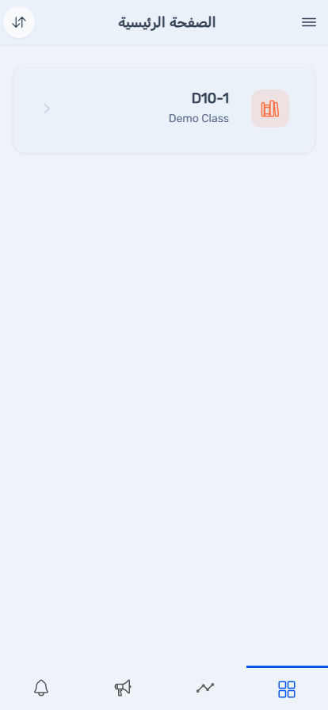
يرى المشرفون التربويون عرضاً إشرافياً عبر الفصول بدلاً من امتلاك قائمة واحدة — يمكنك مراجعة الحضور والسلوك والإنذارات لأي فصل مُسنَد إليك الإشراف عليه.
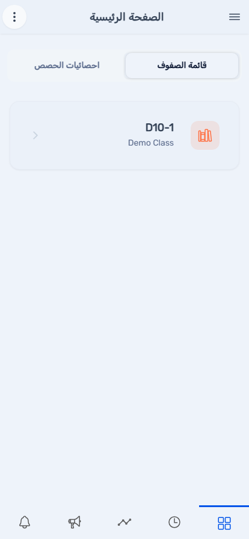
الطلاب المسجَّلون متأخرين في الطابور الصباحي، عبر كل فصل تشرف عليه.
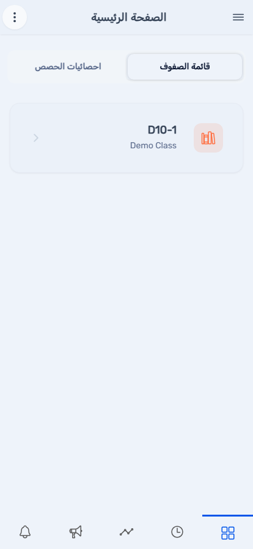
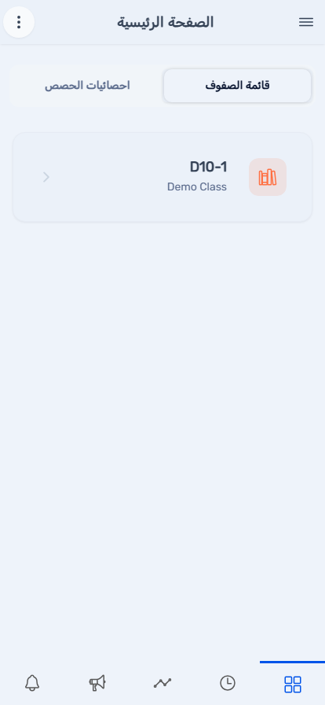
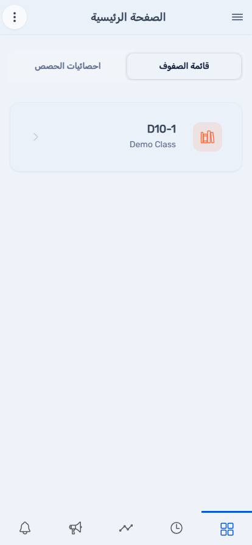
عرض عبر الفصول لكل طالب مسجَّل غائباً اليوم.

قائمة مشرف المدرسة على الهاتف تعكس عدداً من أهم الأدوات الحساسة للوقت من لوحة بصمة للإدارة (الفصل الثالث من ذلك الدليل)، لإدارة قوائمك أثناء التنقل بعيداً عن المكتب.
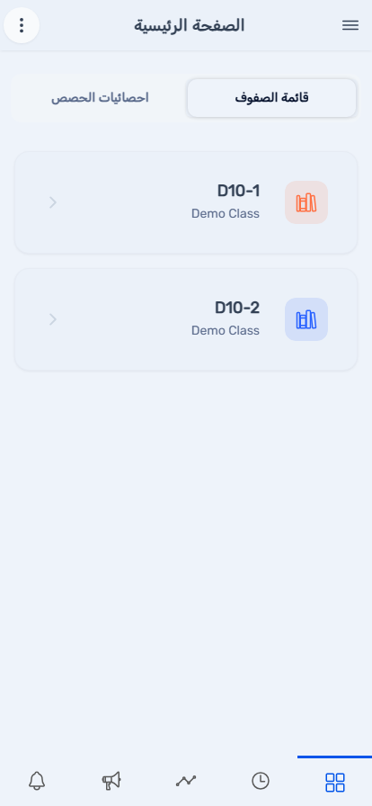
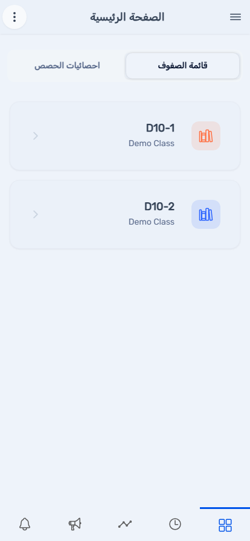
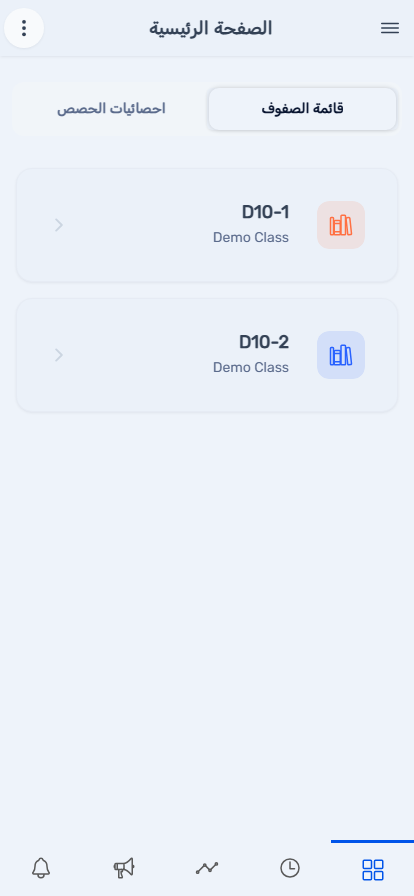
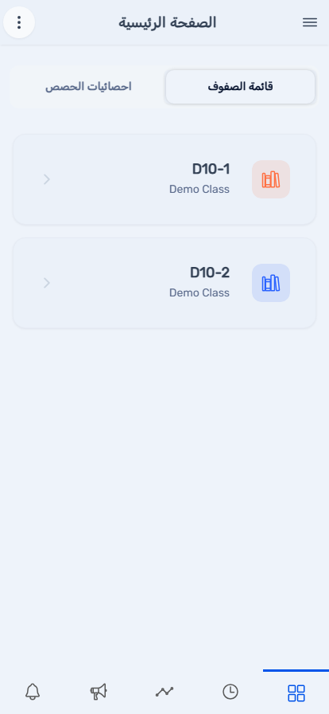
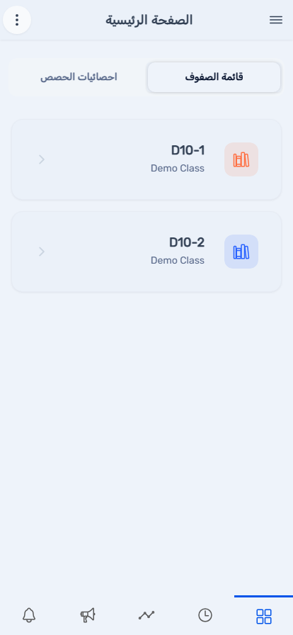
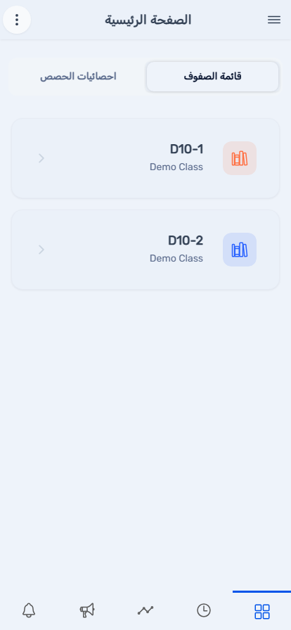
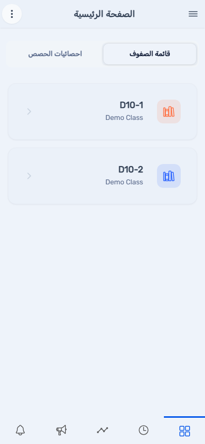
الشاشة الرئيسية لولي الأمر تسرد كل ابن مرتبط بحسابك، مع مستواه السلوكي ولقبه وعدد أيام غيابه بلمحة واحدة.
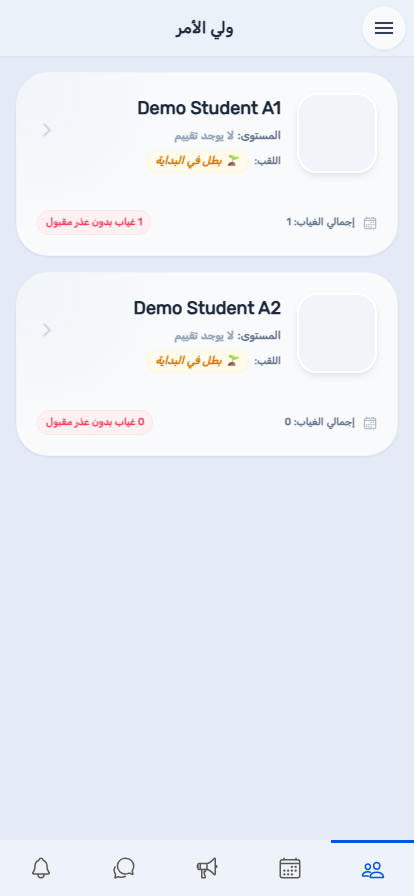
اختر بطاقة الابن لفتح ملفه الكامل.
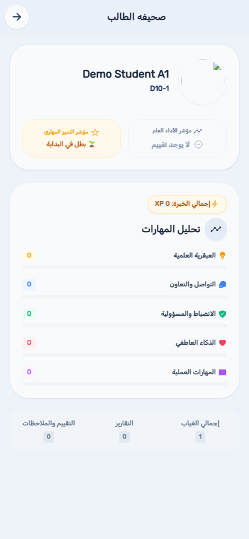
إذا كان لديك أكثر من ابن، تتيح لك قائمة اختيار تحديد جدول أي ابن تريد عرضه؛ مع ابن واحد يُفتح مباشرة.
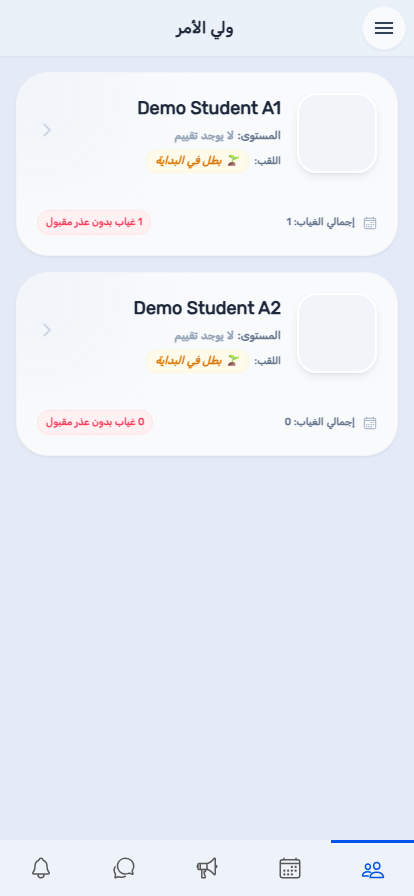
قناة مراسلة مباشرة مع مدرسة ابنك.


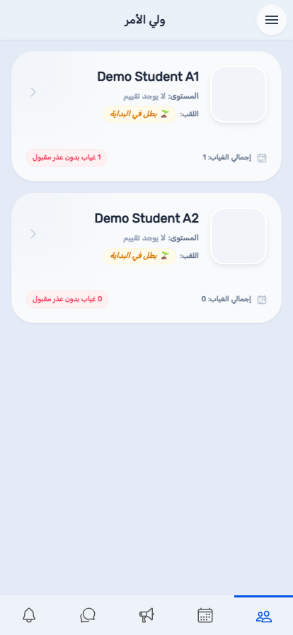
راجع أو فعّل مميزات إضافية لمدرستك، أو استبدل كود قسيمة أصدرته مدرستك.


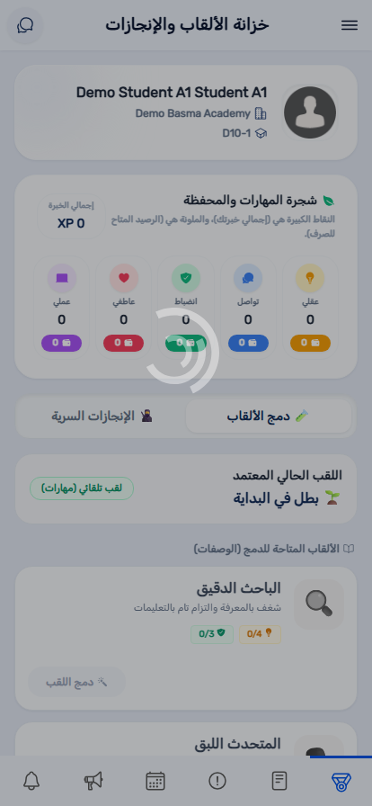
الألقاب وسلاسل الإنجاز التحفيزية التي حققتها عبر نظام النقاط.
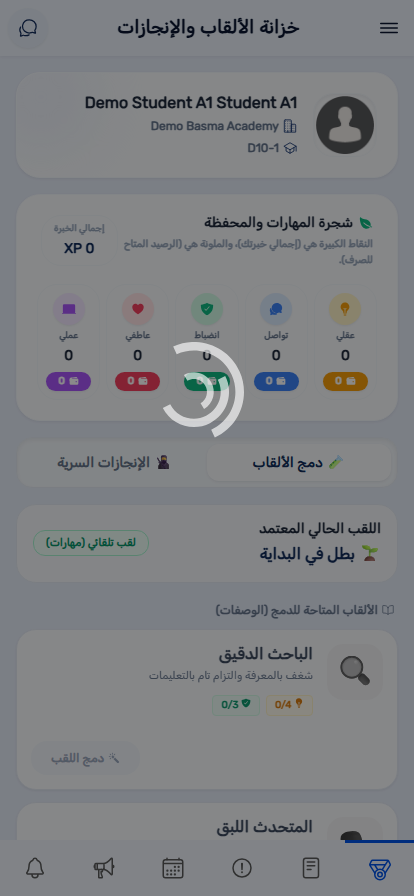
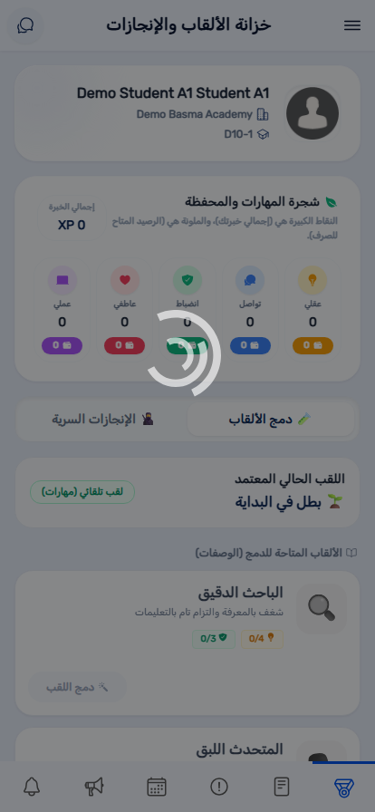
حصر غيابك المستمر مقارنة بحدود الإنذار الخاصة بمدرستك.
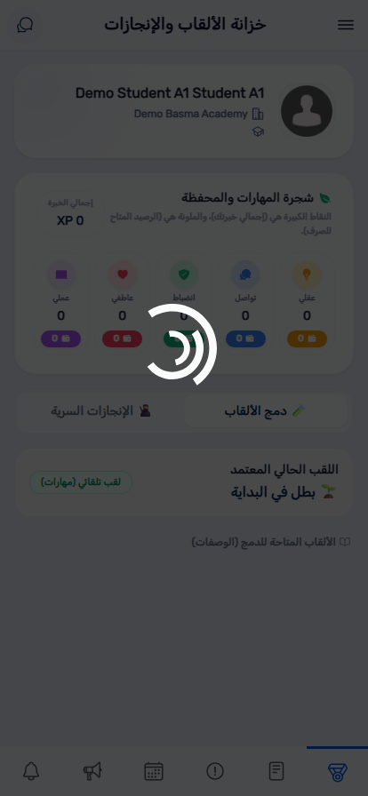
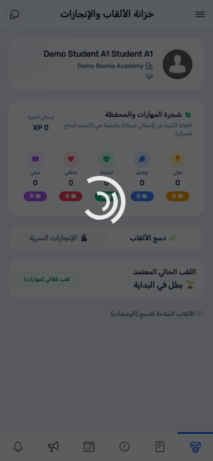
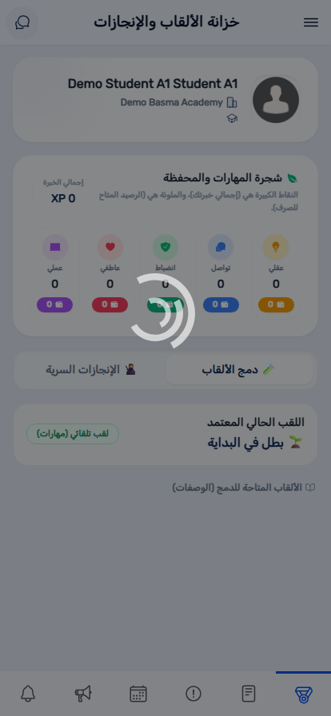
تحقق مرة أخرى أن اسم المستخدم وكلمة المرور مكتوبان تماماً كما صدرا. إن استمرت المشكلة، تواصل مع إدارة مدرستك — لا يوفر التطبيق إعادة تعيين ذاتية لكلمة المرور.
لم يتم إسنادك بعد إلى قائمة فصل. تواصل مع إدارة مدرستك للتأكد من تعيين فصلك.
تواصل مع إدارة مدرستك — يمكنها إعادة تعيين الحصة من شاشة المعلمين البدلاء في لوحة بصمة للإدارة.
يوجد داخل القائمة الجانبية (الأيقونة في زاوية معظم الشاشات)، وليس في شاشة تسجيل الدخول نفسها — سجّل الدخول أولاً، ثم بدّل اللغة.
روابط الابن بولي الأمر تُدار من لوحة بصمة للإدارة، وليس من التطبيق نفسه — اطلب من إدارة مدرستك التأكد من إعداد الرابط بشكل صحيح.
| المصطلح | المعنى |
|---|---|
| قائمة الفصول | الشاشة الرئيسية للمعلم أو المشرف التربوي، تسرد الفصول المُسنَدة إليه. |
| طلب التغطية | تعيين تدريس بديل يجب على المعلم قبوله أو رفضه. |
| مهمة المراقبة | تعيين ثابت لمراقبة اختبار؛ على عكس طلب التغطية، لا يحتاج رداً. |
| تواصل ولي الأمر | قناة المراسلة داخل التطبيق بين ولي الأمر وطاقم المدرسة. |
| المشرف التربوي | طاقم إشرافي يشرف على عدة فصول دون أن يكون معلم مادة لأي منها. |